Physical systems rarely organise through a single scale. My research connects local transport, turbulent structure,
acoustic response, scalar mixing, chemical activity, and numerical modeling to explain how complex behaviour
emerges in natural and engineered thermofluid systems.
Mechanisms across scales
Ocean mixing, reacting flows, acoustics, filtering, topology, and transport.
My research connects application-scale behavior with the smaller-scale mechanisms that control transport,
instability, sound generation, scalar interfaces, ocean mixing, and numerical representation.
Ocean mixing and double diffusion
Salt-water fingering in a finite-depth Boussinesq layer
Current salt-fingering work examines how warm, salty fluid above colder, fresher fluid develops
double-diffusive instability when heat diffuses more rapidly than salt. The simulation resolves the
onset and slow nonlinear growth of salinity, temperature, and vertical-velocity structure in a
three-dimensional finite-depth Boussinesq setting, with an emphasis on flux pathways, interface
deformation, and the transition from seeded perturbations toward organised finger-like transport.
Simulation-guided design of engine configurations under emissions, noise, and stability constraints
Applied propulsion work has connected injector design, droplet-cloud transport, evaporation and heat
transfer, wall cooling, air-bleed profiles, combustor acoustics, emissions trends, and engine-geometry
changes. These studies combine high-fidelity flow simulation with finite-element and coupled-field
interpretation of structural response, so design changes can be judged against thermal loading, acoustic
behavior, structural integrity, manufacturability, and regulatory constraints.
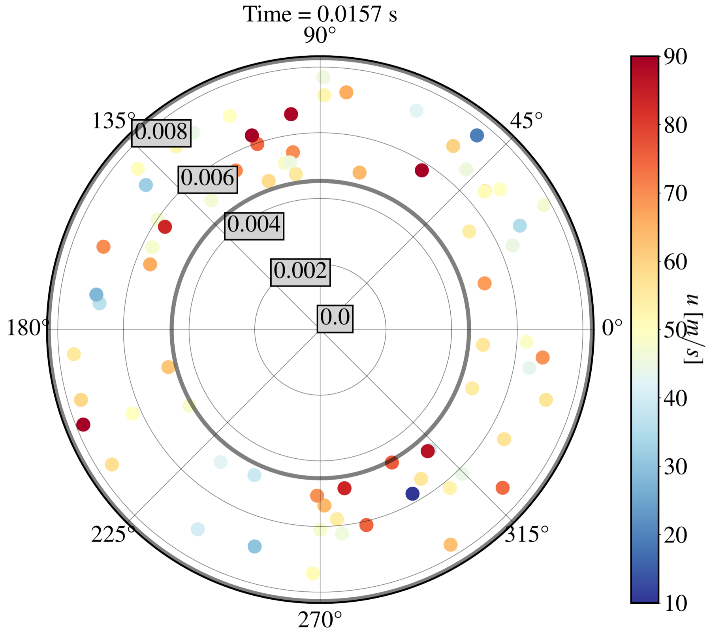
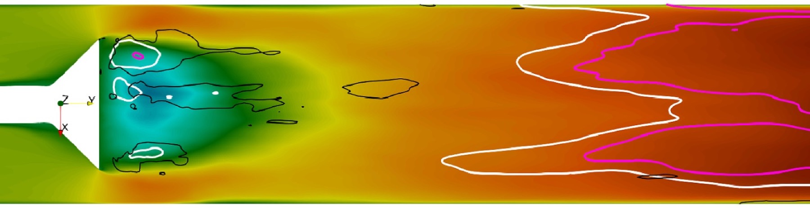
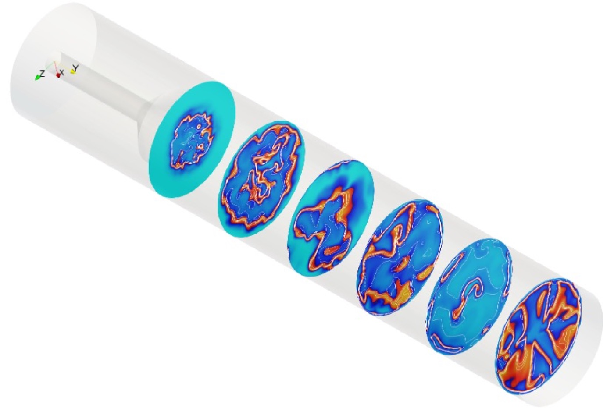
Combustion emissions
Emission structure in a bluff-body combustor
Practical combustors must balance stability, mixing, temperature rise, and emissions. These simulations
connect the velocity field, downstream carbon-monoxide distribution, and flow-variable correlations to
identify which regions and mechanisms most strongly influence pollutant formation. The same analysis
framework supports combustor geometry and flow-rate trade studies where emissions reduction has to be
balanced against thermal loading and operability.
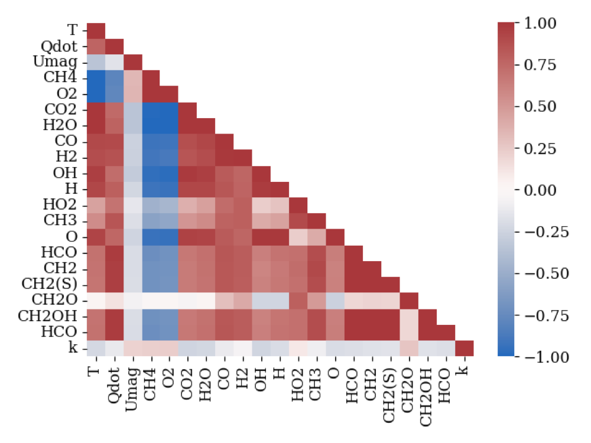
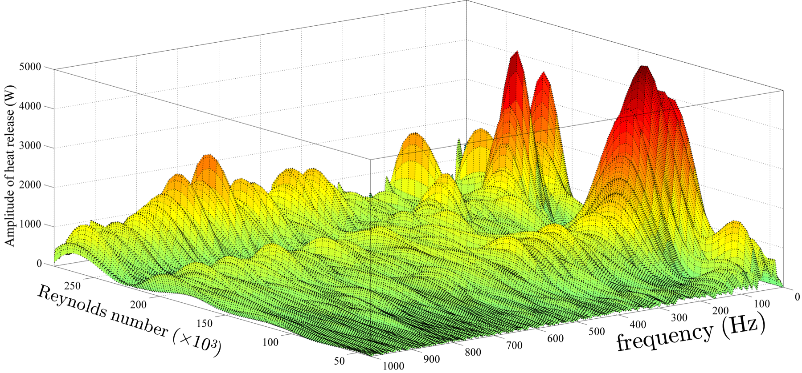
Afterburner instability
Operating-state feedback in a practical afterburner
Combustion instability emerges when unsteady heat release and acoustic modes reinforce each other. The
operating map links flow rate, heat-release fluctuation strength, and dominant acoustic frequency to
identify feedback-prone regions, while the pressure spectrum highlights the loudest unstable modes.
This work connects noise and stability requirements to combustor flow and structural design decisions.
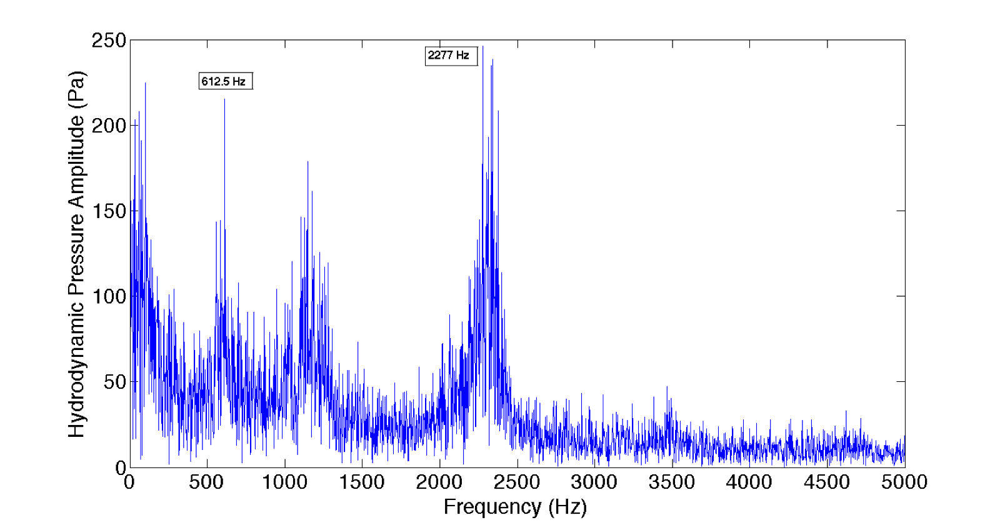
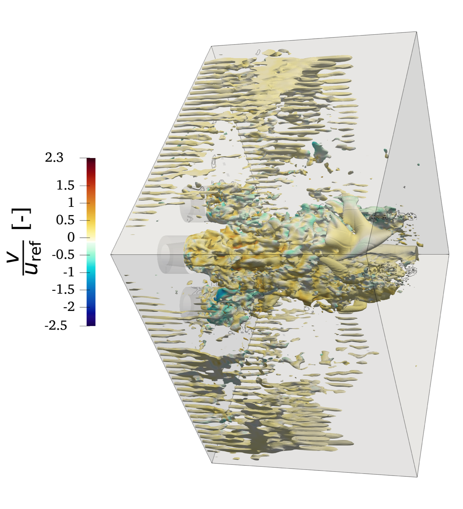
Spray and propulsion systems
Droplet transport in an annular engine inlet
Liquid fuel placement and carrier-flow structure control evaporation, mixing, emissions, and operability.
The visualizations show droplet distribution and the surrounding flow field in a supersonic engine-relevant
configuration, highlighting how inlet nonuniformity can propagate into downstream combustion behavior.
The design context includes injector assessment, droplet-cloud evolution, evaporation and heat-transfer
rates, and downstream thermal-load implications.
Shock interaction
Vorticity generation in a four-shock Riemann problem
Colliding shock systems generate vorticity, pressure-wave interactions, and rapidly changing interface
geometry. The movie visualizes vorticity induced by moving shocks with pressure contours overlaid, making
the coupling between wave motion and rotational structure visible in time. The calculation is useful as a
compact stress test for shock-capturing behavior, interface deformation, and the conversion of compressive
motion into rotational flow.
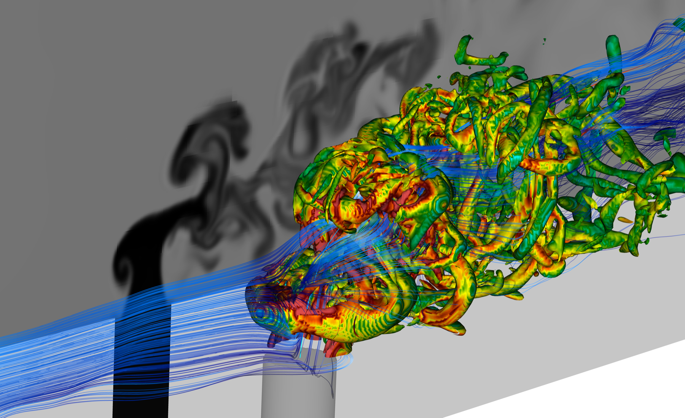
Jet-in-crossflow combustion
Mixing and heat release in a methane-air jet-in-crossflow
Jet-in-crossflow injection is central to many air-breathing combustion systems. Vortical structures,
streamlines, temperature projection, mixture fraction, and heat-release contours show how jet penetration,
shear-layer rollup, and scalar mixing shape flame anchoring and thermal loading.
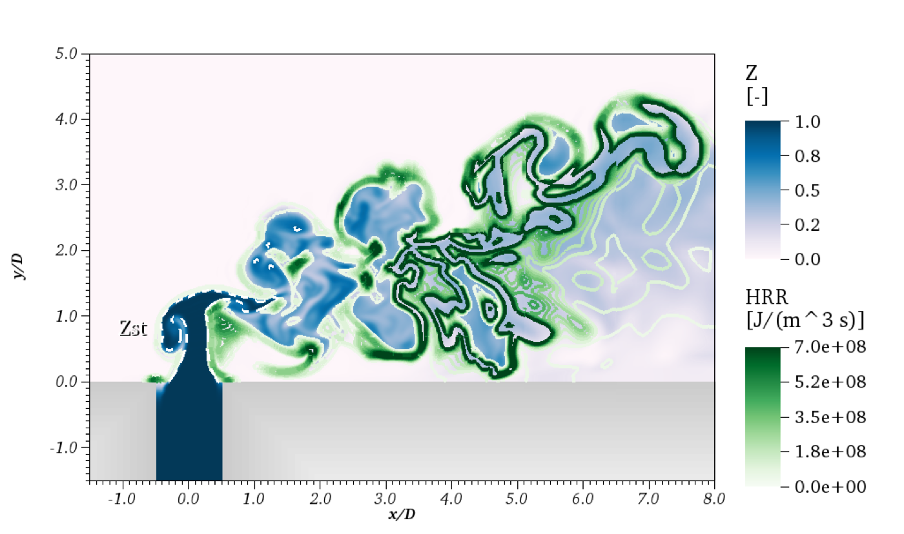
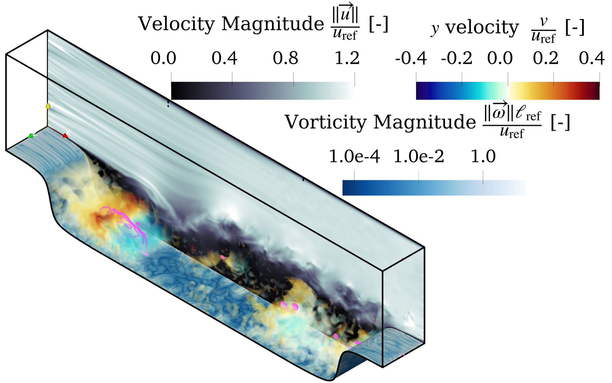
Separated-flow dynamics
Unsteady separation and reattachment over periodic hills
Separating and reattaching flows are common in diffusers, ducts, turbomachinery passages, and thermal
management hardware. Isovolumes and wall-projected structures show how large coherent motion interacts
with near-wall vorticity and reattachment dynamics.
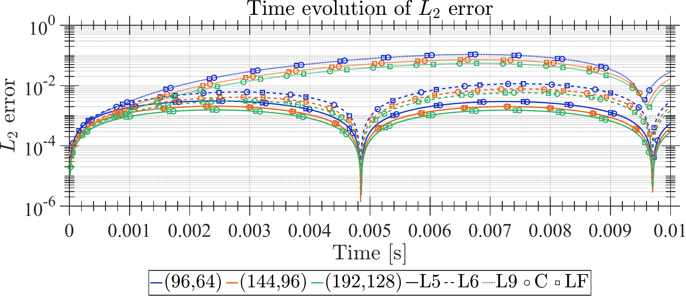
Room acoustics
Sound propagation in an absorptive enclosure
A damped wave-equation simulation shows how sound emitted from a speaker-like source reflects, spreads,
and decays inside an enclosed space with one absorbing wall. High-order schemes reduce numerical dispersion,
which is essential when the goal is to predict how sound feels across a room rather than only whether a wave
reaches a point.
Numerical simulation
Mesh-based modeling, discretization, and high-performance simulation workflows
Across my research, the technical workflow combines governing-equation modeling, mesh-based
discretization, numerical reasoning shared across finite-volume and finite-element formulations, parallel
execution, field reconstruction, and quantitative postprocessing for coupled transport, acoustic, and
reacting-flow systems. It also includes practical geometry preparation, meshing, design sweeps, and
interpretation across CFD, FEA, and coupled multiphysics tools. The emphasis is on building simulations
that can be interrogated after the fact,
so that fields, derived quantities, event sets, spectra, and reduced diagnostics remain traceable back to
the underlying conservation laws.
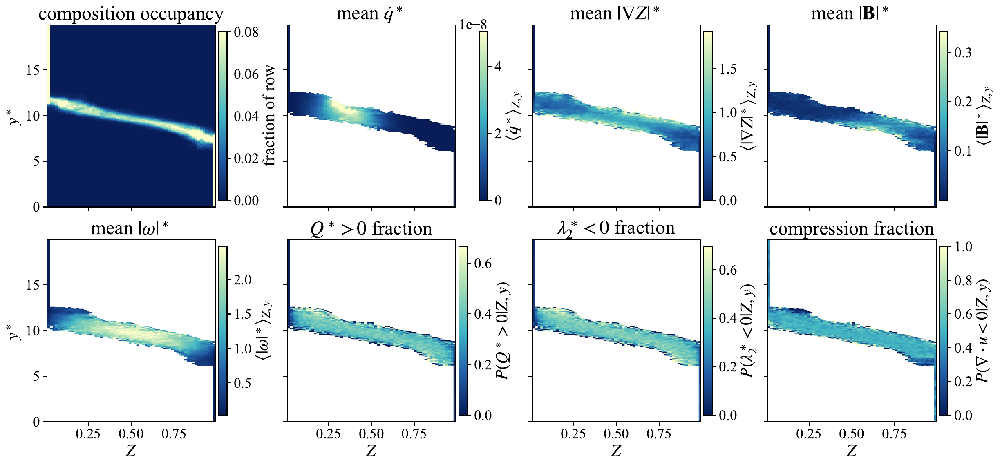
Flow physics atlas
Topology, mixing, compressibility, and reaction physics in a supersonic hydrogen-air temporal mixing layer
A broad characterization of a reacting shear layer showing how vortical motion, scalar interfaces, heat
release, baroclinicity, compressible work, and turbulence anisotropy occupy related but distinct supports.
This study provides the physical baseline for the filtering and interscale analyses. The emphasis is on
locating where momentum transport, mixing, thermal activity, and chemical response coincide, and where
they separate into different regions of the layer.
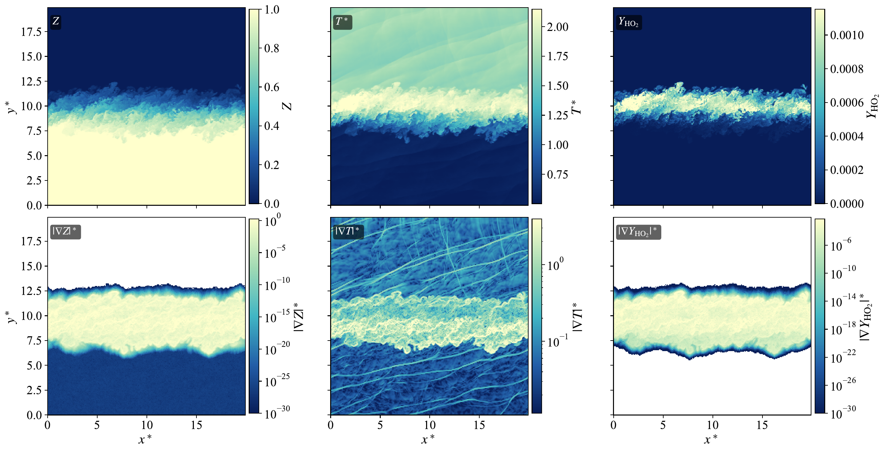
Temporal dynamics
Temporal organization of heat release and kinematic activity in a turbulent mixing layer
Time-series diagnostics quantify recurrence, spectra, nonlinear dependence, and modal structure in heat
release, dilatation, and vorticity signals extracted from the reacting layer. The resulting picture connects
intermittent thermochemical bursts with the temporal organization of compressive and vortical activity,
rather than treating the signals as isolated scalar histories.
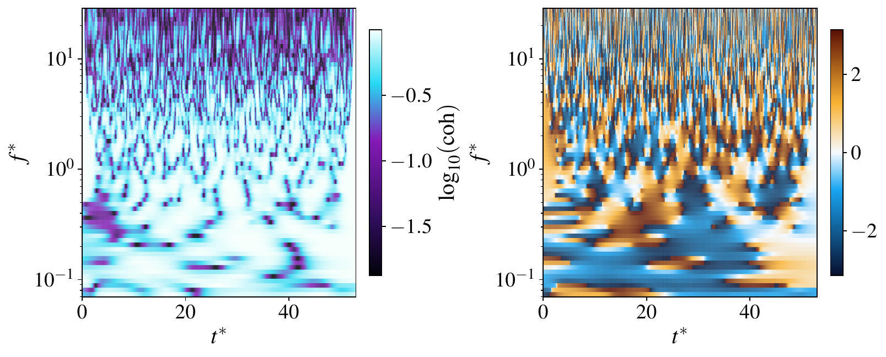
Filtering time signatures
Box-filtering effects on time-series diagnostics of a reacting temporal mixing layer
Box filtering is treated as a diagnostic intervention on unsteady dynamics, revealing which amplitudes,
timing signatures, phase relations, and coherent structures survive scale-selective attenuation.
This branch connects directly to scale-resolved modeling questions while keeping the emphasis on physical
behavior rather than one method family. The recurrence structure is especially useful because it shows how
filtering changes the geometry of repeated states, not only the signal amplitude.
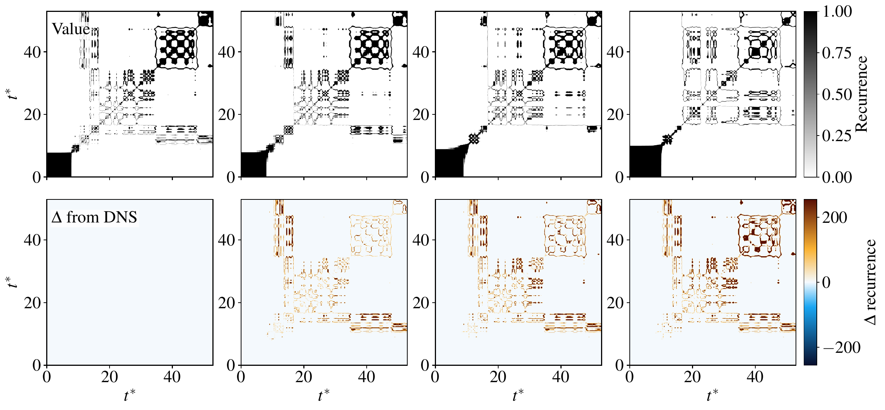
Low-frequency organization
Intermittent collective low-frequency organization in a turbulent reacting mixing layer
Phase-alignment maps and event composites identify intermittent windows where heat release, dilatation, and
vortical activity become collectively organized at low frequency. These windows help separate persistent
low-frequency coordination from short-lived amplitude bursts, giving a clearer view of when the reacting
layer behaves as a coupled thermo-kinematic system.
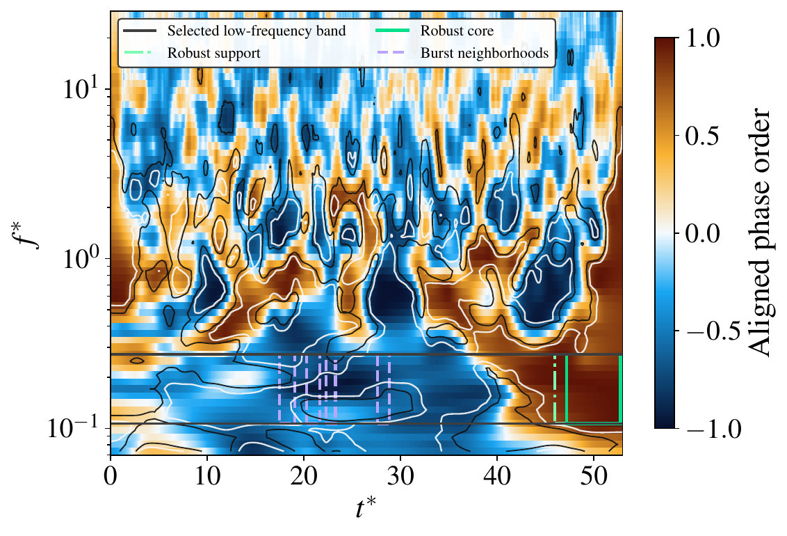
Disturbance energetics
Modal energetics and disturbance-energy partition in a reacting shear layer
Acoustic, vortical, entropic, and cross-energy components are separated to clarify how a reacting shear layer
stores disturbance energy across thermodynamic and kinematic branches. The decomposition makes it possible
to ask whether energetic structure is primarily compressive, vortical, thermal, or mixed, which is difficult
to infer from primitive variables alone.
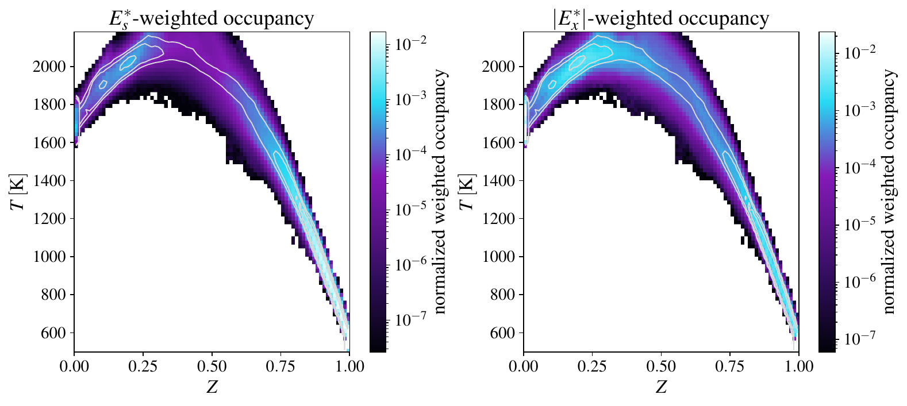
Interaction budgets
Interaction budgets and multiscale coupling in a reacting shear layer
Mass-like, force-like, and heat-like interaction families are compared in physical space, PDFs, spectra,
wavelets, and dominance maps to expose non-additive multiscale coupling. The comparison is designed to show
whether scale-to-scale organization is carried by one dominant mechanism or by competing pathways that
occupy different regions of transform space.
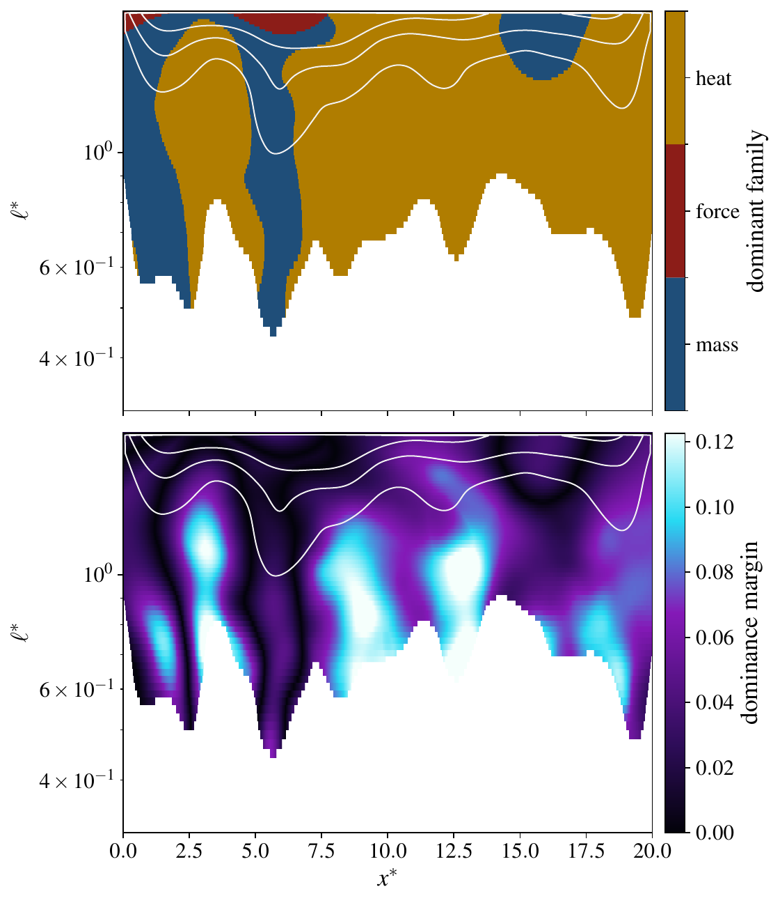
Filtered modal interactions
Box-filter robustness of modal interaction diagnostics in a reacting shear layer
Modal interaction diagnostics are filtered directly and through commutation checks to determine which
coupling measures are robust enough for scale-resolved interpretation.
The emphasis is on what reduced-resolution simulation can preserve, distort, or require modeling.
This gives a direct bridge between modal physics and practical filtering decisions in reduced-resolution
reacting-flow calculations.
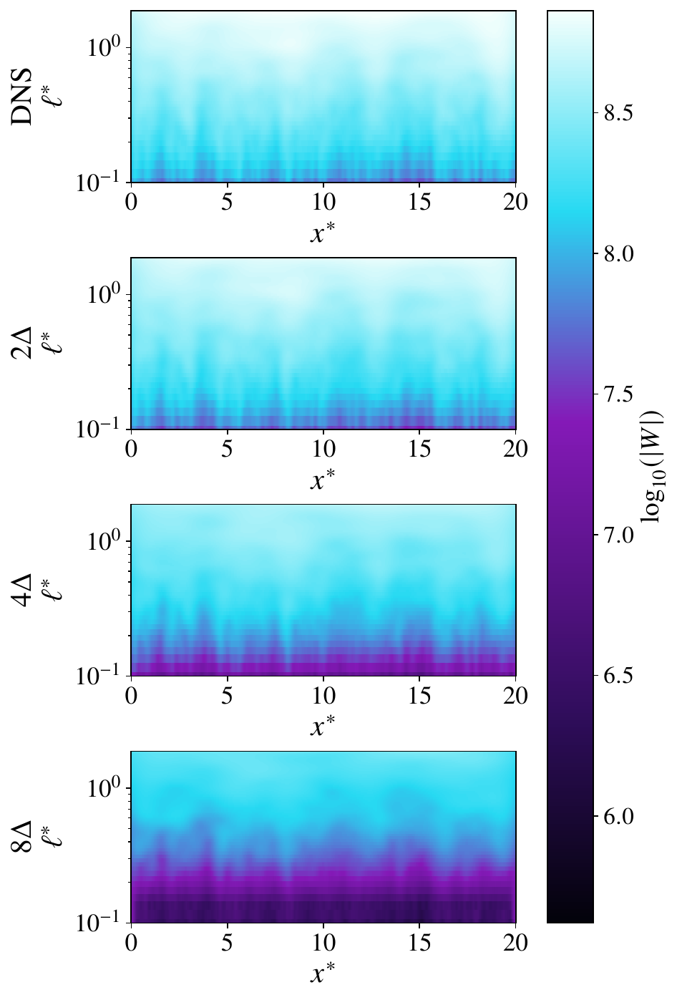
Entropy and irreversibility
Filtering effects on entropy transport and entropy-production structure in a supersonic reacting shear layer
Entropy-like transport and production proxies show how filtering reshapes localized irreversible activity
near sharp scalar, thermal, and compressive gradients. The analysis connects numerical scale removal with
thermodynamic interpretation, highlighting where smoothing alters the apparent support of dissipation-like
and entropy-producing processes.
Submitted to J. Fluid Mech. Rapids; preprint available as arXiv:2606.15399.
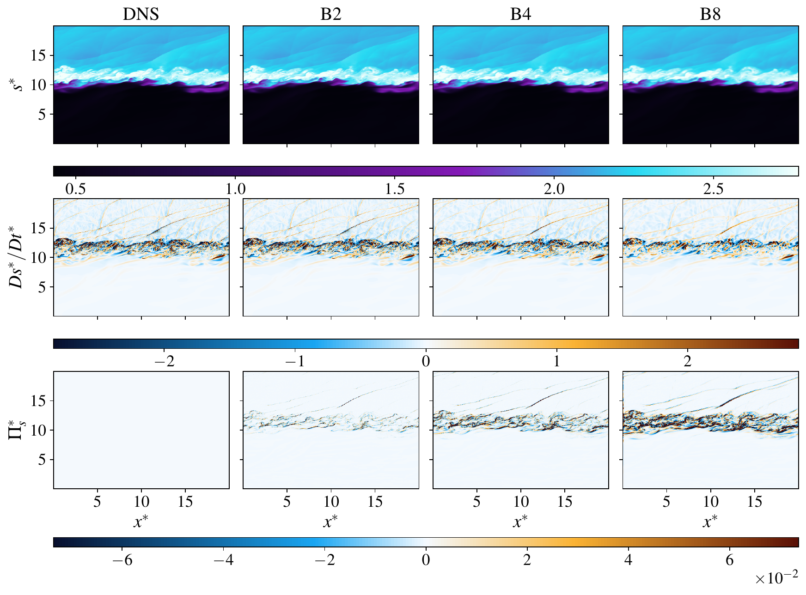
Interface geometry
Fractal geometry and multiscale connectivity of a reacting temporal mixing-layer interface
Mixture-fraction interfaces are analyzed through fractal dimension, connectivity, curvature, and
thermochemical alignment to connect geometry with reaction-zone structure. The goal is to quantify how
convoluted scalar surfaces organize heat release and mixing, rather than describing the interface only
through visual complexity.
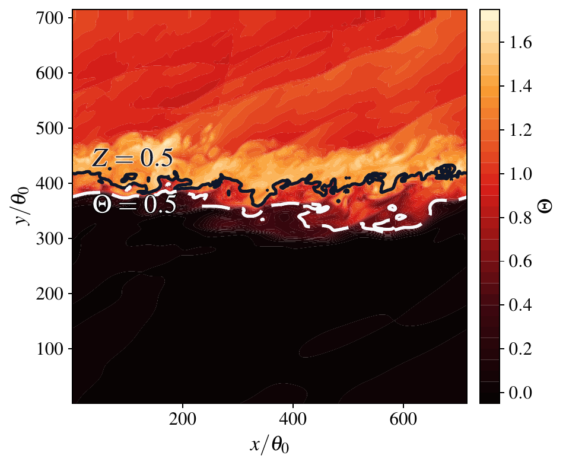
Lagrangian transport
Lagrangian coherent structures in a supersonic reacting temporal mixing layer
FTLE ridges locate attracting and repelling material structures that organize scalar transport, ridge
intersections, and thermochemical signatures in the evolving layer. These structures provide a material
view of mixing, showing how transport barriers and stretching regions guide where reactive scalars are
brought together.
Local wave-vortex interaction in a reacting supersonic shear layer
Dilatation and vorticity diagnostics quantify local synchronization, lag, band-limited coupling, and
convective-frame coactivity between acoustic-compressive and vortical fields. This separates genuine
wave-vortex organization from simple spatial overlap, which is important in compressible shear layers where
acoustic and hydrodynamic motions coexist.
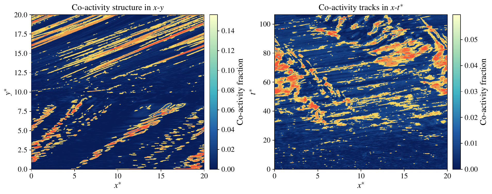
Combustion noise
Near-field combustion-noise source dynamics in a reacting supersonic temporal mixing layer
Heat release, compression, geometry, and broadband acoustic signatures are linked to the feedback between
reacting turbulence and sound generation. The analysis connects local reaction structure with time-frequency
acoustic content, clarifying how broadband noise emerges from distributed, intermittent combustion activity.
Submitted to Combust. Theory Model.; preprint available as arXiv:2606.15626.
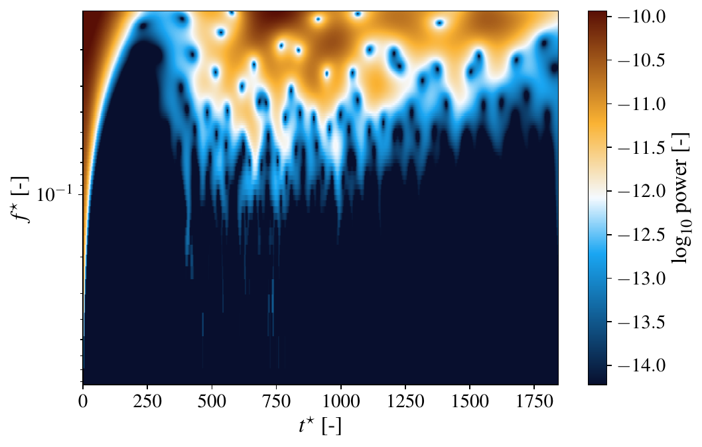
Reactive-acoustic packets
Reactive-acoustic wave packet dynamics in a supersonic reacting shear layer
Band-averaged dilatation isolates reactive-acoustic wave packets and quantifies their speeds, persistence,
scales, and thermochemical environment. The group-velocity view turns localized compressive activity into
measurable packet motion, making it possible to compare transport speed, lifetime, and reaction-zone
association across frequency bands.
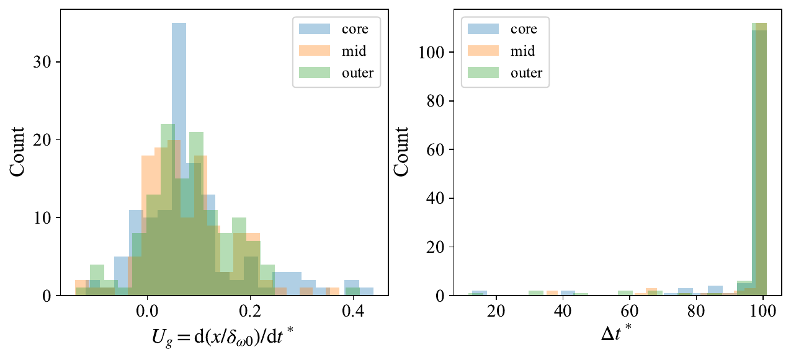
Receptivity
Receptivity and biorthogonal decomposition in a reacting temporal mixing layer
Direct and adjoint finite-thickness modes identify where localized forcing couples most strongly to
Kelvin-Helmholtz receptivity in a chemically active shear layer. The biorthogonal formulation links spatial
forcing, modal response, and shear-layer amplification, so the result identifies sensitive regions rather
than only energetic structures.
Submitted to Theor. Comput. Fluid Dyn.; preprint available as arXiv:2606.20819.
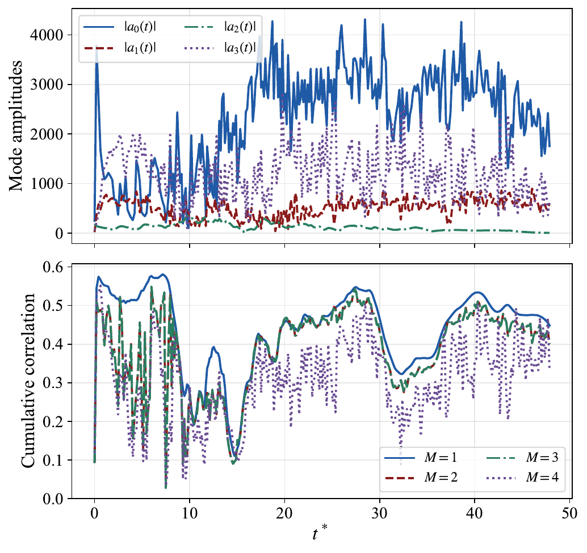
Compression-chemistry coupling
Event-level compression-chemistry coupling in a supersonic reacting temporal mixing layer
Compression masks condition heat release and scalar-gradient activity to quantify overlap, proximity, lag,
geometry, and event-scale coupling. The resulting diagnostics show whether compressive events merely pass
through reacting regions or whether they preferentially align with chemically and scalar-active structures.
Submitted to Combust. Flame; preprint available as arXiv:2606.15628.